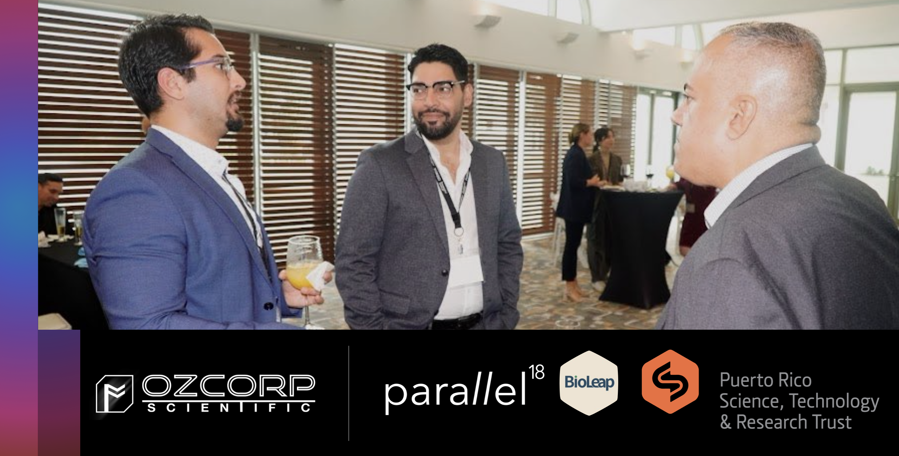
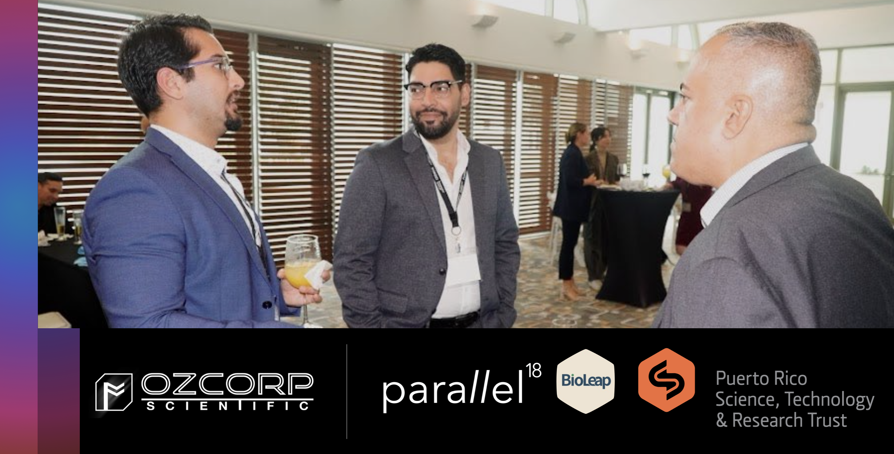

Puerto Rico Pharmaceuticals Summit
March 21, 2024 - Authored by: Osvaldo D. Rivera-González
The pharmaceutical industry in Puerto Rico is currently at a critical juncture, facing a myriad of factors that shape its present and future trajectory. Recently at the 2024 Puerto Rico Pharmaceuticals Summit, hosted by Porzio, Bromberg & Newman, P.C., local industry leaders have discussed the complexities of various elements, including laws, environmental considerations, and infrastructure factors, all of which influence the importation and exportation of biopharmaceutical products. Key stakeholders have emphasized the importance of addressing current needs such as the demand for postdocs and a skilled workforce, while also advocating for government incentives of biotech companies to bolster capabilities within the industry.

Photo: Discussions on enabling the local biotech startup innovation ecosystem. (left) Osvaldo D. Rivera, Founder and Managing Director of Ozcorp Scientific LLC (ozcorp.io); (center) Noe E. Crespo, Program Directory at Bioleap - a Parallel18 Program (parallel18.com/bioleap); (right) Marcos López-Casillas, Director of the Research Institute at Puerto Rico Science, Technology and Research Trust (prsciencetrust.org/) (Source: Porzio, Bromberg & Newman, P.C.)
There is a growing recognition of Puerto Rico's strategic importance in Washington's sphere, especially considering ongoing issues like PROMESA and talent-retention challenges. While governmental actions are crucial, significant changes in the industry are also expected to stem from private sector initiatives. Remembrance discussion on the results of Section 936, a historically risky period for Puerto Rico economic growth, underscores the strategic value of Puerto Rico for the United States and raises questions about how the region can capitalize on its assets to drive local industry development, specifically the biopharmaceuticals industry. The pharmaceutical industry in Puerto Rico currently holds a significant position within the island's economy, contributing to over 30% of its GDP and providing employment for more than 75,000 individuals. However, despite its economic importance, the industry faces various challenges, including the aftermath of natural disasters, faulty energy infrastructure, changes in federal tax policies, competition from other regions, specialized talent retention and an evolving regulatory landscape. These issues were explored in depth at the Puerto Rico Pharmaceuticals Summit, a small conference that brought together leaders from legal, economic, manufacturing, and pharmaceutical sectors to discuss the state of the local pharmaceutical industry.
During the session titled "State of the Pharmaceutical Industry in Puerto Rico," top leaders, including Francisco E. Colón-Ramirez from Colón Ramírez LLC, Humberto Mercader, Deputy Secretary for Strategic Initiatives from the Department of Economic Development and Commerce (DEDC), Ivan Román, Advisor to the Board of Directors from the Pharmaceutical Industry Association (PIA), and Eric Santiago, President of the PR Manufacturers Association (PRMA), examined the industry's current status, strengths, weaknesses, opportunities, and threats. The panelists also explored strategies and best practices to overcome challenges and foster innovation and growth within the sector.
One of the key areas of discussion was the import and export dynamics of pharmaceutical products, with insights shared by Zuleika Pineiro and Ivonne Vicente from the U.S. Food and Drug Administration's (FDA) Office of Import Operations. The exportation of FDA-regulated products from Puerto Rico, was addressed by Dara Katcher Levy and Karla L. Palmer, both Directors at from Hyman, Phelps & McNamara, P.C. Collectively, the talks provided insights into the regulatory framework governing the exportation and importation of pharmaceutical products to and from Puerto Rico, including recent regulatory actions by the FDA. They highlighted the complexities of compliance with regulatory standards such as the FD&C Act and emphasized the importance of adhering to import and export regulations to ensure product safety and efficacy. Regulatory bodies like the FDA's DSEI and the U.S. CBP are instrumental in screening, monitoring, and enforcing regulations related to drug labeling, registrations, and qualifications. To that end, the regulatory and legislative outlook for the pharmaceutical industry was examined during a session titled "A View from Washington", where Elizabeth Fowler, and Nick Uehlecke provided updates on regulatory and legislative developments, offering insights into the industry's outlook for 2024 and beyond from their respective vantage points. Importantly, Elizabeth Fowler, Director of the Center for Medicare and Medicaid Innovation in the US Department of Health and Human Services, joined the conversation to provide insights on the importance of addressing healthcare access, particularly for underserved populations in Puerto Rico, where considerations regarding Medicaid and Medicare coverage are of paramount importance. With a significant elderly demographic, ensuring affordability and accessibility of essential treatments is crucial in Puerto Rico. As discussions continue, one overarching question looms: Will Puerto Rico end up paying less or more for medications produced within its borders? This question not only concerns economic considerations but also speaks to Puerto Rico's potential role as a gateway for pharmaceutical exports to the mainland United States.

Photo: Panel discussing strategic incentives for the biopharmaceutical industry in Puerto Rico. (Source: Porzio, Bromberg & Newman, P.C.)
The conference later dived into the strategic advantages of doing business in Puerto Rico, particularly in the context of navigating global economic turbulence. Experts from leading compliance, accounting, corporate advisory firms and local accelerators discussed the challenges faced by business leaders in today's economic climate and how strategic location, skilled workforce, and tax incentives in Puerto Rico can be leveraged to drive innovation, stability, and return on investment. During the conference session titled "Navigating Global Turbulence: Drop Your Anchor in Puerto Rico," industry experts including Carlos Fontan from the Office of Incentives for Business in Puerto Rico, Aurelio Fuentes and Colton Wandke from DECA Analytics, Isabel Hernández from Kevane Grant Thornton, LLP, and Robert M. Schechter from Porzio, Bromberg & Newman, P.C. converged to address the challenges faced by business leaders in today's dynamic economic climate. With interest rates on the rise and inflationary pressures looming large, selecting the optimal location for a business venture becomes pivotal for ensuring margins, growth, and stability. By capitalizing on the territory's favorable business environment and leveraging its unique incentives, such as tax-credits, businesses can navigate global economic turbulence more effectively while driving growth and maximizing profitability.
Looking ahead, the focus lies on future projects and avenues for commercialization of innovative ideas. Enablers such as Eng. Lucy Crespo, Dr. Marcos López-Casillas, Dr. Hector Jirau, and Dr. Noe Crespo were present at the summit, actively seeking to shape the trajectory of biopharmaceutical endeavors, emphasizing the importance of collaboration and innovation within the industry. These players are part of The Puerto Rico Science, Technology, and Research Trust (PRSTRT), a government initiative signed into law in 2004 dedicated to driving local innovation and scientific research. Operating as a public-private partnership, the law established a governing body to collaborate with government agencies, academic institutions, and industry partners to stimulate R&D across various sectors including biotechnology, aerospace, and renewable energy. The trust provides funding for research projects, infrastructure development, and educational programs, while also supporting science education and workforce development initiatives. Additionally, it fosters entrepreneurship and technology commercialization, offering resources and networking opportunities to translate research into marketable products and services. Overall, the Puerto Rico Science Trust heavily supports the advancement of the island's scientific and technological capabilities, contributing to its long-term economic growth and competitiveness.
In sum, navigating the pharmaceutical landscape in Puerto Rico requires a multifaceted approach, encompassing collaboration between government, private sector entities, and regulatory bodies. Throughout the packed day at the Summit, various sessions and panels provided attendees with valuable insights into the pharmaceutical industry's dynamics, challenges, and opportunities in Puerto Rico. From regulatory compliance to strategic business decisions, the conference covered a wide range of topics essential for industry professionals and stakeholders seeking to navigate the complex landscape of the pharmaceutical sector. As the event concluded with closing remarks from Vito A. Gagliardi, Jr., the Managing Principal of Porzio, Bromberg & Newman, P.C., attendees left with a deeper understanding of the industry's nuances and a renewed sense of optimism for its future in Puerto Rico. By leveraging its strategic assets and fostering a conducive environment for industry growth, Puerto Rico can position itself as a key player in the global pharmaceutical arena.

Photo: Members of the RIVERA-OMICS academic group at the Summit. (left) Osvaldo D. Rivera, (center) Emmanuel Franceschini-Rosado, (right) Carla N. Cintron-Benoit.

Photo: Discussions on enabling the local biotech startup innovation ecosystem. (left) Osvaldo D. Rivera, Founder and Managing Director of Ozcorp Scientific LLC (ozcorp.io); (center) Noe E. Crespo, Program Directory at Bioleap - a Parallel18 Program (parallel18.com/bioleap); (right) Marcos López-Casillas, Director of the Research Institute at Puerto Rico Science, Technology and Research Trust (prsciencetrust.org/) (Source: Porzio, Bromberg & Newman, P.C.)
There is a growing recognition of Puerto Rico's strategic importance in Washington's sphere, especially considering ongoing issues like PROMESA and talent-retention challenges. While governmental actions are crucial, significant changes in the industry are also expected to stem from private sector initiatives. Remembrance discussion on the results of Section 936, a historically risky period for Puerto Rico economic growth, underscores the strategic value of Puerto Rico for the United States and raises questions about how the region can capitalize on its assets to drive local industry development, specifically the biopharmaceuticals industry. The pharmaceutical industry in Puerto Rico currently holds a significant position within the island's economy, contributing to over 30% of its GDP and providing employment for more than 75,000 individuals. However, despite its economic importance, the industry faces various challenges, including the aftermath of natural disasters, faulty energy infrastructure, changes in federal tax policies, competition from other regions, specialized talent retention and an evolving regulatory landscape. These issues were explored in depth at the Puerto Rico Pharmaceuticals Summit, a small conference that brought together leaders from legal, economic, manufacturing, and pharmaceutical sectors to discuss the state of the local pharmaceutical industry.
During the session titled "State of the Pharmaceutical Industry in Puerto Rico," top leaders, including Francisco E. Colón-Ramirez from Colón Ramírez LLC, Humberto Mercader, Deputy Secretary for Strategic Initiatives from the Department of Economic Development and Commerce (DEDC), Ivan Román, Advisor to the Board of Directors from the Pharmaceutical Industry Association (PIA), and Eric Santiago, President of the PR Manufacturers Association (PRMA), examined the industry's current status, strengths, weaknesses, opportunities, and threats. The panelists also explored strategies and best practices to overcome challenges and foster innovation and growth within the sector.
One of the key areas of discussion was the import and export dynamics of pharmaceutical products, with insights shared by Zuleika Pineiro and Ivonne Vicente from the U.S. Food and Drug Administration's (FDA) Office of Import Operations. The exportation of FDA-regulated products from Puerto Rico, was addressed by Dara Katcher Levy and Karla L. Palmer, both Directors at from Hyman, Phelps & McNamara, P.C. Collectively, the talks provided insights into the regulatory framework governing the exportation and importation of pharmaceutical products to and from Puerto Rico, including recent regulatory actions by the FDA. They highlighted the complexities of compliance with regulatory standards such as the FD&C Act and emphasized the importance of adhering to import and export regulations to ensure product safety and efficacy. Regulatory bodies like the FDA's DSEI and the U.S. CBP are instrumental in screening, monitoring, and enforcing regulations related to drug labeling, registrations, and qualifications. To that end, the regulatory and legislative outlook for the pharmaceutical industry was examined during a session titled "A View from Washington", where Elizabeth Fowler, and Nick Uehlecke provided updates on regulatory and legislative developments, offering insights into the industry's outlook for 2024 and beyond from their respective vantage points. Importantly, Elizabeth Fowler, Director of the Center for Medicare and Medicaid Innovation in the US Department of Health and Human Services, joined the conversation to provide insights on the importance of addressing healthcare access, particularly for underserved populations in Puerto Rico, where considerations regarding Medicaid and Medicare coverage are of paramount importance. With a significant elderly demographic, ensuring affordability and accessibility of essential treatments is crucial in Puerto Rico. As discussions continue, one overarching question looms: Will Puerto Rico end up paying less or more for medications produced within its borders? This question not only concerns economic considerations but also speaks to Puerto Rico's potential role as a gateway for pharmaceutical exports to the mainland United States.
Photo: Panel discussing strategic incentives for the biopharmaceutical industry in Puerto Rico. (Source: Porzio, Bromberg & Newman, P.C.)
The conference later dived into the strategic advantages of doing business in Puerto Rico, particularly in the context of navigating global economic turbulence. Experts from leading compliance, accounting, corporate advisory firms and local accelerators discussed the challenges faced by business leaders in today's economic climate and how strategic location, skilled workforce, and tax incentives in Puerto Rico can be leveraged to drive innovation, stability, and return on investment. During the conference session titled "Navigating Global Turbulence: Drop Your Anchor in Puerto Rico," industry experts including Carlos Fontan from the Office of Incentives for Business in Puerto Rico, Aurelio Fuentes and Colton Wandke from DECA Analytics, Isabel Hernández from Kevane Grant Thornton, LLP, and Robert M. Schechter from Porzio, Bromberg & Newman, P.C. converged to address the challenges faced by business leaders in today's dynamic economic climate. With interest rates on the rise and inflationary pressures looming large, selecting the optimal location for a business venture becomes pivotal for ensuring margins, growth, and stability. By capitalizing on the territory's favorable business environment and leveraging its unique incentives, such as tax-credits, businesses can navigate global economic turbulence more effectively while driving growth and maximizing profitability.
Looking ahead, the focus lies on future projects and avenues for commercialization of innovative ideas. Enablers such as Eng. Lucy Crespo, Dr. Marcos López-Casillas, Dr. Hector Jirau, and Dr. Noe Crespo were present at the summit, actively seeking to shape the trajectory of biopharmaceutical endeavors, emphasizing the importance of collaboration and innovation within the industry. These players are part of The Puerto Rico Science, Technology, and Research Trust (PRSTRT), a government initiative signed into law in 2004 dedicated to driving local innovation and scientific research. Operating as a public-private partnership, the law established a governing body to collaborate with government agencies, academic institutions, and industry partners to stimulate R&D across various sectors including biotechnology, aerospace, and renewable energy. The trust provides funding for research projects, infrastructure development, and educational programs, while also supporting science education and workforce development initiatives. Additionally, it fosters entrepreneurship and technology commercialization, offering resources and networking opportunities to translate research into marketable products and services. Overall, the Puerto Rico Science Trust heavily supports the advancement of the island's scientific and technological capabilities, contributing to its long-term economic growth and competitiveness.
In sum, navigating the pharmaceutical landscape in Puerto Rico requires a multifaceted approach, encompassing collaboration between government, private sector entities, and regulatory bodies. Throughout the packed day at the Summit, various sessions and panels provided attendees with valuable insights into the pharmaceutical industry's dynamics, challenges, and opportunities in Puerto Rico. From regulatory compliance to strategic business decisions, the conference covered a wide range of topics essential for industry professionals and stakeholders seeking to navigate the complex landscape of the pharmaceutical sector. As the event concluded with closing remarks from Vito A. Gagliardi, Jr., the Managing Principal of Porzio, Bromberg & Newman, P.C., attendees left with a deeper understanding of the industry's nuances and a renewed sense of optimism for its future in Puerto Rico. By leveraging its strategic assets and fostering a conducive environment for industry growth, Puerto Rico can position itself as a key player in the global pharmaceutical arena.
Photo: Members of the RIVERA-OMICS academic group at the Summit. (left) Osvaldo D. Rivera, (center) Emmanuel Franceschini-Rosado, (right) Carla N. Cintron-Benoit.
The RIVERA-OMICS academic group was thrilled to attend the Summit. It was an opportunity to connect with local leaders, learn about important incentives and regulation, and reconnect with our friends at the PRSTRT.
Authored by:

About RIVERA-OMICS:
OMICS (Omics Molecular Innovations and Commercialization Strategies), is an entity built to develop omics-focused academic research projects and investigate the commercial landscape of novel biotechnologies and biomedicines. OMICS is a branch of RIVERA Initiatives Inc, a non-profit organization that seeks to empower academia through comprehensive resources and collaborative research endeavors to advance educational excellence and innovation.
For inquiries, please contact:
research@riveraomics.org